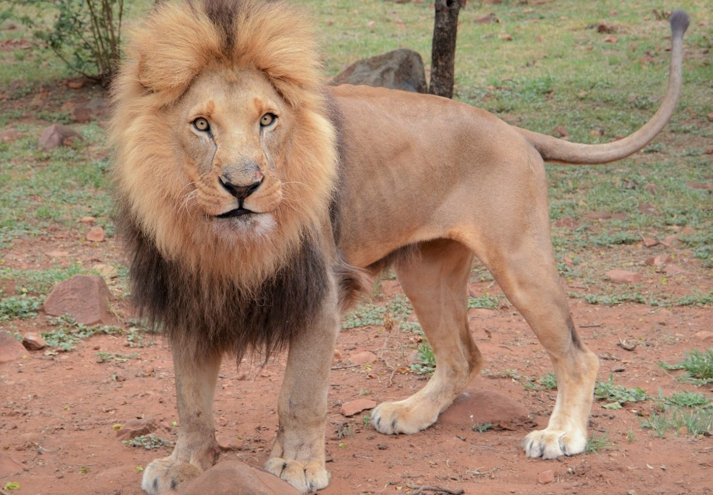

Лев — крупный и мощный хищник, представитель из семейства кошачьих. Это одна из самых сильных и могущественных кошек на Земле, уступает лишь амурскому тигру в размерах, но на африканском континенте кошки крупнее не сыскать. Поэтому в культуре львы стали считаться настоящими “королями всех зверей”, а свою известность приобрели еще с незапамятных времен, постоянно появляясь в различных легендах народов. Это во многом уникальное животное.
Самое большое отличия льва от других кошек — их общительность и социальность; они живут в группах, которые называются прайдами. Львы относятся к семейству больших кошачьих, а это означает, что самцы и самки могут рычать. Это дневное животное, но при необходимости, вызванной опасностью, легко приспосабливается и к ночи, обладая отличным ночным зрением. С 1996 года включен в красный список МСОП, поскольку с 1990-х годов численность львом сократилась на 43%.
Львы является широко признанным животным символом — он часто использовался и продолжает использоваться в различных скульптурах и картинах, на национальных флагах, в фильмах и литературе. Ученые находили изображения львов, датирующиеся временами раннего палеолита; а фигурки и картинки, найденные в пещерах Ласко и Шове во Франции были созданы целых 17 000 лет назад. Во времена расцвета Римской империи львы содержались в зверинцах, а с конца 18-го века эти огромные кошки стали главным номером во многих зоопарках по всему миру.

Подробное описание вида
Подробнее можете узнать в Яндекс